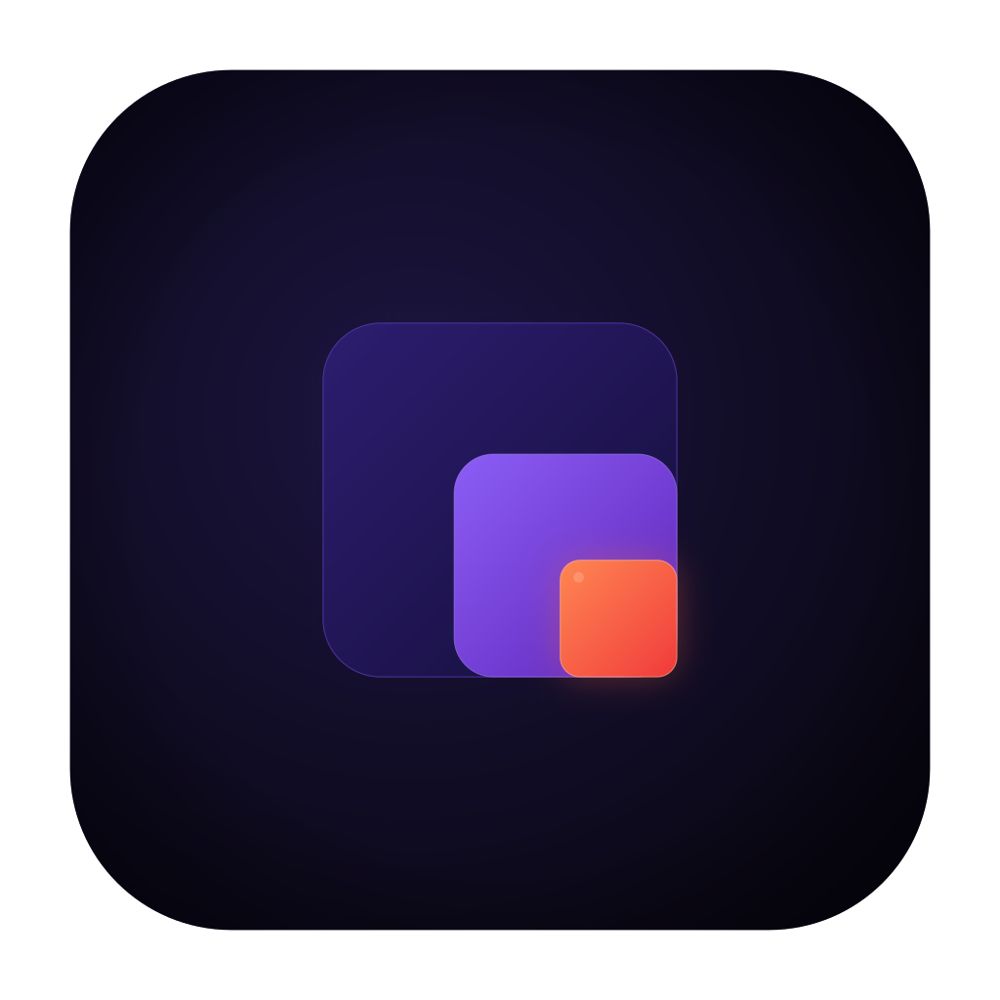
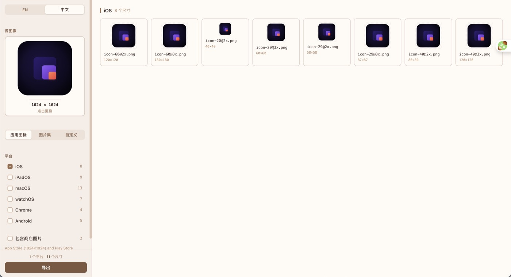

本地优先
本机缩放与导出。无账号、无云端中转、无意外上传。

Icon SizesIcon Sizes 是一款免费桌面应用，从单张源图生成 iOS、macOS、Android、Chrome 扩展与图片集所需图标，并打成 ZIP。全部在本地完成。
GitHub Releases 提供 macOS DMG（Apple Silicon）与 Windows MSI / EXE。

面向不想把设计稿上传到陌生网站、又需要 Asset Catalog / mipmap 结构的开发者。
本机缩放与导出。无账号、无云端中转、无意外上传。
一次导出 iOS/macOS、Android mipmap、图片集、Chrome 扩展图标等。
相关导出附带 Contents.json，更容易放进 Xcode。
MIT 协议。可读源码、可 fork，也可用 pnpm + Rust 自行构建。
基于 Tauri：拖放源图、侧边栏选平台、主区实时预览。
应用内支持中英文切换。
网页工具零安装；Icon Sizes 用一次下载换来隐私和桌面端预设。
| 方式 | 优势 | 代价 |
|---|---|---|
| 网页图标生成器 | 不用安装 | 通常要上传原图 |
| IDE / 设计插件 | 工作流集成深 | 常绑定单一平台或付费套件 |
| Icon Sizes | 本地、多平台 ZIP、免费 | 需要下载桌面应用 |
直接下 Release 安装包，或在本机从源码构建。
打开最新 GitHub Release，选择 macOS DMG 或 Windows 安装包。
macOS Developer ID + 公证仍在推进；在此之前首次打开可能需要清除隔离属性。
pnpm install pnpm tauri build
免费，并以 MIT 协议开源。
不会。处理都在你的电脑上完成。
iOS/macOS 应用图标、Android 启动图标、图片集、Chrome 扩展图标，以及 Favicon 与商店图等选项。
不上传、桌面工作流、一次打出多平台预设；相关导出可带 Asset Catalog 元数据。